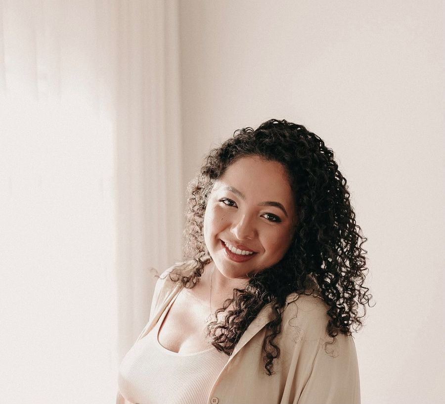
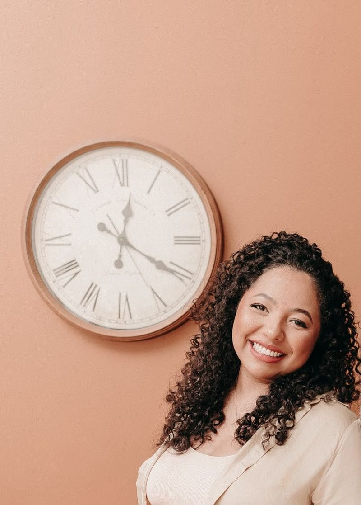
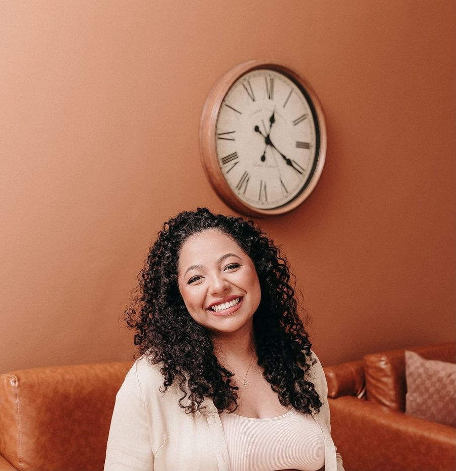

Intestino preso, barriga inchada, fígado alterado no exame: gastroenterologista com residência na USP.
Formada na FIP-Moc com o prêmio Doutor Hermes de Paula de melhor desempenho acadêmico. Na consulta, ela lê seus exames e decide o tratamento ou o próximo exame.
A equipe da Clínica Gastrus responde no WhatsApp e confirma o horário.
Dra. Maria Luiza Terra, Médica Gastroenterologista, CRM-MG 73963, RQE 58851.
- Residência de Gastroenterologia no HC da USP de Ribeirão Preto, 2021 a 2023
- Dois RQEs: Gastroenterologia e Clínica Médica
- Segundas, das 8h às 11h. Consulta de cerca de 30 minutos
Três queixas, e o que a consulta faz com cada uma
Para cada queixa: o que pode estar por trás, que exame ela lê ou pede, e o que decide.
-
Intestino preso e barriga inchada
Intestino irritável, intolerância à lactose, excesso de bactérias no intestino delgado (SIBO) e doença celíaca dão sintomas parecidos. Na consulta, ela aponta o mais provável no seu caso, diz se precisa de exame e com que tratamento começar.
-
TGO, TGP ou GGT altos, ou gordura no fígado no ultrassom
Enzima alta vem de causas diferentes: gordura, álcool, remédio, vírus. Ela lê os exames que você já tem, pede o que falta (sorologia de hepatite, elastografia, quando cabe) e define o que tratar e quando repetir.
-
Colonoscopia e teste de SIBO: quando pedir
Colonoscopia entra por sinal de alerta, idade ou caso na família. O teste respiratório de SIBO entra por barriga inchada que não cede. Ela pede o exame quando o resultado muda o tratamento, e lê o laudo na consulta.
Uma dessas é a sua? Agende pelo WhatsApp.
Intestino e fígado. Exame lido, decisão tomada na consulta.

Como é a consulta: cerca de 30 minutos, com o exame na mesa
Exame alterado sozinho não fecha diagnóstico. A Dra. Maria Luiza cruza o resultado com o que você sente, desde quando, e com os remédios que usa. Você sai com uma de três: tratamento, exame que falta ou retorno com data.
O que a consulta não cobre: endoscopia alta, atendimento de criança e opinião sobre exame por mensagem. Nesses casos, a equipe diz para onde ir.
-
Leve os exames
TGO, TGP, ultrassom, colonoscopia antiga: impressos ou no celular. Exame antigo mostra se o valor subiu, caiu ou parou.
-
Uma decisão no fim
Tratamento, exame que falta ou retorno com data. Você sai sabendo qual, e por quê.
-
Cada pedido com motivo
Exame que ela pedir vem com o motivo e com o que o resultado vai mudar no tratamento.

Formação: duas residências, dois RQEs
Instituição, período e registro. Tudo confere no CRM-MG e no currículo Lattes.
-
Residência de Gastroenterologia
Hospital das Clínicas da Faculdade de Medicina de Ribeirão Preto, USP (HC-FMRP-USP), 2021 a 2023. RQE 58851.
-
Residência de Clínica Médica
Hospital Universitário Clemente de Faria, Unimontes, 2019 a 2021. RQE 68062.
-
Registro profissional
CRM-MG 73963. RQE 58851 de Gastroenterologia e RQE 68062 de Clínica Médica.
-
Graduação em Medicina
FIP-Moc, 2012 a 2017. Prêmio "Doutor Hermes de Paula - Melhor desempenho acadêmico", Faculdades Integradas Pitágoras, 2017.
De Montes Claros a Ribeirão Preto, e de volta
A Dra. Maria Luiza se formou em Medicina na FIP-Moc, em 2017, com o prêmio Doutor Hermes de Paula de melhor desempenho acadêmico. Em 2018, atuou como médica de família pela residência de Medicina de Família e Comunidade da Unimontes.
De 2019 a 2021, fez residência de Clínica Médica no Hospital Universitário Clemente de Faria, da Unimontes. Daí vem o segundo RQE, 68062.
De 2021 a 2023, fez residência de Gastroenterologia no Hospital das Clínicas da Faculdade de Medicina de Ribeirão Preto, da USP. Hoje atende intestino e fígado na Clínica Gastrus, em Montes Claros, às segundas de manhã.
Perguntas antes de agendar
Devo levar meus exames para a consulta?
Sim, todos, inclusive os antigos. Impressos ou no celular. Comparar resultados mostra se o valor subiu, caiu ou ficou parado.
Quanto dura a consulta?
Cerca de 30 minutos, em horário pontual.
Ela faz colonoscopia ou teste de SIBO?
Ela indica quando o exame faz sentido e lê o resultado na consulta. Se o exame é feito na própria Gastrus, a equipe confirma pelo WhatsApp.
Posso mandar meu exame pelo WhatsApp para ela avaliar?
Não. Por mensagem, o exame chega sem o resto: sintomas, remédios, exames anteriores. Leve o resultado à consulta.
Como agendo a consulta?
Pelo WhatsApp da Clínica Gastrus. A agenda da Dra. Maria Luiza é às segundas, das 8h às 11h, e a equipe confirma o horário.
E se eu tiver um sinal de alerta agora?
Não espere a consulta. Vômito com sangue, fezes pretas ou com sangue vivo, dor forte na barriga que não passa, pele e olhos amarelados de repente com febre ou desmaio: vá ao pronto-atendimento mais perto ou ligue 192.
Onde e quando é a consulta
A Dra. Maria Luiza atende na Clínica Gastrus, em Montes Claros.
- Endereço
- Clínica Gastrus, R. Eng. João Antônio Pimenta, 163, Cidade Santa Maria, Montes Claros
- Agenda
- Segundas, das 8h às 11h. O horário é combinado pelo WhatsApp.
- Consulta
- Cerca de 30 minutos, horário pontual. Chegue alguns minutos antes.
Exame alterado parado na gaveta não responde nada.
Leve o resultado a uma gastroenterologista. Agenda às segundas de manhã, na Clínica Gastrus.
